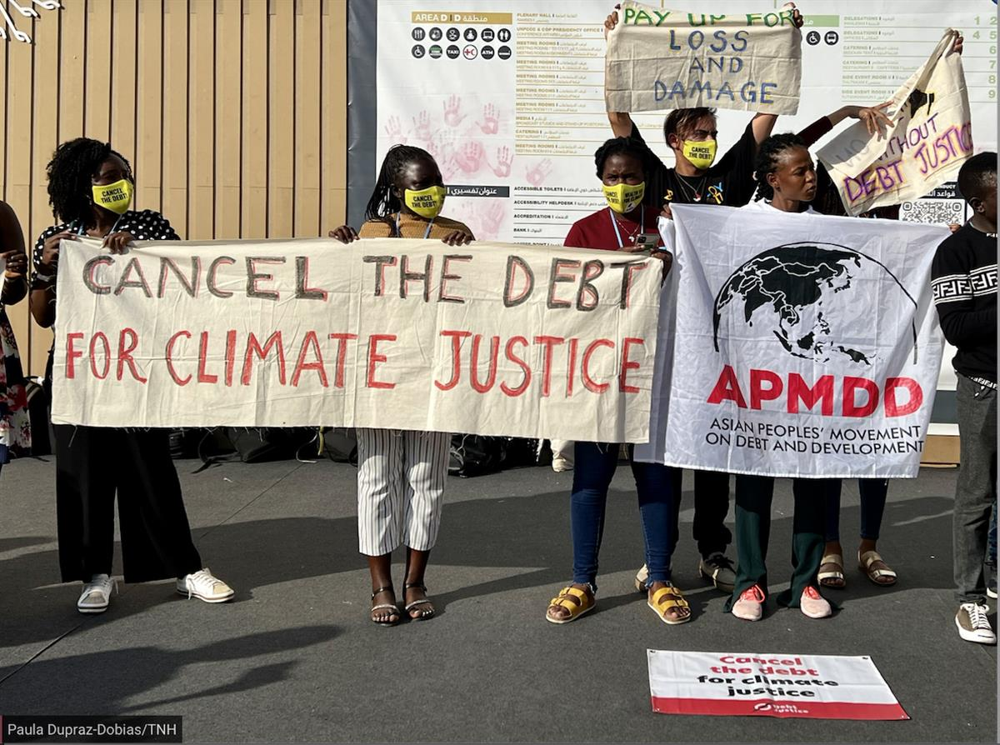

- Climate change
- News
- 21 November 2022
COP27: Diplomatic baby steps amid mounting humanitarian crises
Climate justice collided with political wrangling. The result? Incremental progress.
Latin America Editor-at-large
SHARM EL-SHEIKH, Egypt
Climate justice played a central role at COP27, where the snail’s pace of progress on addressing the climate emergency once again stood in stark contrast to the realities on disaster front lines.
Negotiators and policymakers emerged from the annual summit in Egypt hailing a breakthrough on so-called “loss and damage” financing, agreeing to create a new fund to help countries facing the worst impacts of the crisis.
After 30 years of advocacy and pushback on the issue, arguments leaning on climate justice had a clear influence on the political agenda, with vulnerable countries and climate campaigners alike pushing similar messages.
Yeb Saño, a prominent former diplomat from the Philippines and the Southeast Asia director for Greenpeace, called it a “new dawn for climate justice”. UN Secretary-General António Guterres said it was a badly needed step “to rebuild broken trust”. Humanitarian groups branded it a “monumental win”, though the crucial details of how the fund work still need to be thrashed out in the coming months.
Yet in spite of the diplomatic negotiations and last-minute theatrics, results came up short in other key areas.
“It has been a good pitch to say that it’s a COP for Africa. But the negotiations haven’t had Africa at the centre, and the needs of several millions of Africans facing starvation.”
Funds to help countries adapt to and mitigate climate change are still far short of the annual $100 billion previously pledged. Stronger wording on the phasing down of fossil fuels wasn’t included in the final negotiated text. And there were no major new promises to ratchet up emissions cuts – despite signs that country-level plans to limit temperature-rise to 1.5 degrees Celsius are significantly off target.
COP27 had been presented by its Egyptian presidency as “the implementation COP”, and as Africa’s summit, though many participants here felt that the talks disappointed on both fronts.
“It has been a good pitch to say that it’s a COP for Africa. But the negotiations haven’t had Africa at the centre, and the needs of several millions of Africans facing starvation,” Isaiah Kipyegon Toroitich, head of global advocacy at the Lutheran World Federation, told The New Humanitarian.
Frustrated by years of roadblocks by powerful countries at these summits, some civil society groups and humanitarians have concentrated their advocacy outside the negotiation rooms in an attempt to drive the needle forward. At this COP, issues like debt, gender justice, and migration emerged as hot-button concerns on the summit sidelines, if only blips on the official radar.
Here are some of the key issues that emerged – or were overlooked – during COP27, and what the next steps may include.
Loss and damage
Described as a “down payment on climate justice” by Pakistan’s climate minister, the agreement to set up a loss and damage fund must be just the start, humanitarian groups and civil society advocates say.
Farah Naureen, Pakistan director for aid group Mercy Corps, said more public funding and more innovative financing sources were needed, adding “the real work will only begin after COP27”.
While advocates view acknowledgement for loss and damage as a core part of climate justice, discussions on the new fund were only able to proceed after negotiators agreed to remove references linking funding to any form of “reparations” or “liability”, which wealthy countries worried may usher in unlimited claims.
Questions over who will pay into the fund and how the money will be distributed are still to be negotiated. European countries argued in Sharm el-Sheikh that China and oil and gas producers such as Saudi Arabia and Qatar – all considered by UN definitions as developing countries – should pay. They also want Russia to be included.

Paula Dupraz-Dobias/TNH Protesters outside the COP27 summit venue in Egypt call for debt relief for poorer climate-vulnerable countries.
A sense of who would be eligible to receive money was at least partially provided during the last sleepless night of negotiations: Negotiators agreed to a final wording that cited “developing countries that are particularly vulnerable to the adverse effects of climate change”.
“The loss and damage outcome was one that was vital for solidarity with [climate-vulnerable] countries, because it’s about the entire ecosystem that needs to happen,” Jennifer Morgan, Germany’s special climate envoy and former executive director of Greenpeace, told The New Humanitarian.
Germany and other G7 nations, along with their counterparts in the Vulnerable 20(V20) negotiating bloc, used COP27 to announce an insurance and disaster risk finance mechanism called the Global Shield. Some critics saw it as a distraction, especially if it becomes a substitute for new funding.
But Sara Jane Ahmed, finance advisor to the V20 group, said the shield would complement a loss and damage fund. Generally, the V20 countries pushed for new loss and damage financing on top of other solutions. “We have a timing mismatch,” she said. “We need resources today; we cannot wait two to three years to get new resources to come through. We need to keep going at the same time that they find resolution working on [loss and damage].”
Adaptation finance
With much of the public focus on loss and damage, there was little progress on increasing funding for a less-controversial branch of climate finance: adaptation.
Long-standing promises of $100 billion a year have consistently been unmet. At 2021’s COP26 summit in Glasgow, countries agreed to double the funding available for adaptation – the money used to help countries prepare for and reduce the risks of climate change.
Negotiators in Sharm el-Sheikh wrangled over issues such as what baseline to use, before finally recommitting to the previous COP’s promises. They also agreed to set up a framework to track progress on adaptation.
While heads of state from traditional donor governments touted new contributions at COP27, vulnerable countries made clear it was far short of what’s needed. They have long said that adaptation funding – which could be used, for example, to make homes more storm-resistant, to restore coastlines, and to build flood defences – should be more balanced with financing available for mitigation or reducing emissions, which traditionally sees the bulk of the climate funding.
For aid agencies and NGOs, which maintained a strong presence at COP27, insufficient adaptation means climate impacts have become even more challenging to respond to.
Andrew Harper, chief climate advisor at the UN’s refugee agency, UNHCR, said high-profile crises such as the conflict in Ukraine have left less money for “forgotten” emergencies worsened by climate change.
With only 4% of climate finance directed to Africa, mostly in the form of loans instead of grants, and most of it going to mitigation, Harper said: “it is clear that the developing countries who have been doing the most to protect and support refugees, sometimes for decades, demonstrating a level of global solidarity that many in the [Global] North could learn from, are not benefitting at all from even the miniscule funding that is available.”
Reforming the global financial system
Some of the most far-reaching reform proposals weren’t found on the COP27 agenda, but became talking points throughout the summit.
Trapped in a cycle of climate-linked disasters and crushing rebuilding debt, countries like Barbados have led the push to reform the global financial system. Prime Minister Mia Mottley, has called for a range of reforms including loan conditions that would suspend payments after they are hit by disasters or pandemics. Her Bridgetown Agenda suggests that substantial funds could be unlocked through debt relief, more accessible loans, and other reform measures – allowing countries to spend on recovery and reconstruction instead of paying down debt.
Mottley and others used the COP27 stage to call for an overhaul of the global financial system that has trapped climate-vulnerable countries in a cycle of debt. She argues that the Bretton Woods institutions set up following World War II, including the International Monetary Fund and the World Bank, are not serving countries that regularly face increasingly intense and unpredictable disasters.
While loss and damage remains divisive despite progress in Egypt, there’s much greater appetite for financial reforms. Humanitarian groups and the UN’s Guterres are also pushing for debt relief. The US has echoed calls to reform multilateral lending. Even David Malpass, the head of the World Bank, has cited the need to “make progress in the debt agenda”.
Migration
Human mobility was not on the official COP agenda, but displacement – particularly from conflicts worsened by climate change – was a key concern in sideline discussions, especially those attended by the humanitarian aid sector.
Floods and storms, which are aggravated by climate change, pushed at least 21.6 million people from their homes last year, and climate change can also intensify other causes of displacement.
Some believe mobility should be viewed as a way that people adapt to climate change, and say financial support for programmes that assist displaced people should be a part of much-needed adaptation finances in the future.
The final COP27 text cited “displacement”, “relocation”, and “migration” as some of the many “gaps” that need to be tackled in the coming months as the new loss and damage financing is discussed – potentially carving out more space for mobility in coming climate negotiations.
And refugees and displaced people themselves need seats at the COP28 table in Dubai, UNHCR said.
Gender justice
Gender justice has for years been sidelined as a “fringe” issue at climate talks. But women activists have pushed for greater representation at the negotiating table, unique financing, and attention to the climate costs faced by women and girls.
Little of substance on gender issues was mentioned in the final COP27 text, leaving observers disappointed.
“Gender was only marginally mentioned, if at all, in the climate talks’ decisions,” Oxfam said.
Reem Alsalem, the UN special rapporteur on violence, has said that climate change represented the “most consequential threat multiplier for women and girls” and increased the risk and prevalence of violence against them.
Beverly Musili, a gender justice activist and lawyer with the Kenya Institute for Public Policy Research and Analysis, or KIPPRA, said gender still remained very much on the backburner during COP27.
“Gender was only marginally mentioned, if at all, in the climate talks’ decisions.”
She noted that in pastoralist societies in Kenya – where gender inequalities are present – drought is exacerbating impacts on women and girls. “Due to climate change, poverty has been growing and child marriage will most likely regress,” she said.
Her organisation has been trying to educate families about the importance of girls attending school, but “with climate change come more fundamental questions of, ‘Are we going to send our children to school or are we going to look for food?’”
Indigenous women and rural women play key roles in ensuring food security for their communities, as well as in climate change adaptation efforts. In many communities, however, women are marginalised, putting them at greater risk, particularly in the face of climate change.
In spite of the distance and logistical difficulties of travelling to Egypt, Indigenous women from the Amazon were prominent at COP27. They have been leading the drive to recognise the role their communities play in protecting forests; the final text from COP recognised nature-based solutions, a mechanism that can be used to cut carbon emissions, an implicit acknowledgement of the importance of preserving natural ecosystems.
There’s still a clear gender imbalance when it comes to the COP negotiating table, as underlined by the “family shot” of heads of state taken at the summit’s opening: Only 7 of the 110 pictured were women.
In an effort to change the balance, one group, She Changes Climate, encouraged the United Arab Emirates, which will host next year’s climate talks, to appoint a woman as COP28 president: the current minister of climate change and the environment, Mariam Almheiri.
Global climate action beyond COP27
Facing slow progress at the annual UN-led climate summits, countries are finding other ways to accelerate climate action.
The campaign for debt relief and systemic financial reform is one example. The push to bring climate change and human rights to the International Court of Justice is another.
Backed by a catchy music video, the Pacific island nation of Vanuatu used COP27 to announce that its allies have almost finalised a resolution that could put the issue before the UN General Assembly and – if passed there – the UN’s top court.
Years of inaction at COP summits contributed to initial plans for legal action.
“What we have seen this week is that negotiations are not working for the most vulnerable,” said Ralph Regenvanu, Vanuatu’s minister for climate change.
Edited by Irwin Loy.
SOURCE: THE NEW HUMANITARIAN